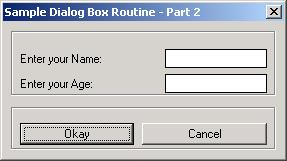
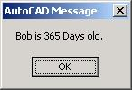

The AutoLisp Tutorial - DCL
Dialog Control Language - Part 2
Part 2 - Edit_Box
Let's build a working DCL file showing us exactly how to handle edit boxes.
We will build a DCL file containing two edit boxes plus a Okay and Cancel button. The information in the two edit boxes will be displayed after selecting the Okay button.
Layout thoughts: I will place the edit boxes in a column, (stacked on top of each other). Then I'll put the Okay and Cancel buttons at the bottom in a row. So...I'll need something like this:
: column {
: boxed_column {
: edit_box {
// Put code for edit_box 1 here
}
: edit_box {
// Put code for edit_box 3 here
}
}
: boxed_row {
: button {
// Put
code for the Okay button here
}
: button {
// Put
code for the Cancel button here
}
}
}
Let's copy in the code for the header and all of the controls above. I'll show them in red. Notice the key names and labels had to be changed.
SAMPLE2 : dialog {
label = "Sample Dialog Box Routine
- Part 2";
: column {
: boxed_column {
: edit_box {
key = "username";
label = "Enter your Name:";
edit_width
= 15;
value
= "";
initial_focus = true;
}
: edit_box
{
key
= "userage";
label
= "Enter your Age:";
edit_width
= 15;
value
= "";
}
}
: boxed_row {
: button {
key
= "accept";
label
= " Okay ";
is_default
= true;
}
: button {
key
= "cancel";
label
= " Cancel ";
is_default
= false;
is_cancel
= true;
}
}
}
}
Right click and copy the above. Open NotePad and paste it. Save the file as SAMPLE2.DCL Be sure to change the "Save as Type" drop down box to "All Files" before saving it or it will put a ".txt" extension on the file name. Save this file somewhere in the AutoCAD search path.
Next we will get a copy of the AutoLisp model and revise it. All new code is shown in red.
(defun C:SAMPLE2()
;;;--- Load the dcl file
(setq dcl_id (load_dialog "SAMPLE2.dcl"))
;;;--- Load the dialog definition if it is not already loaded
(if (not (new_dialog "SAMPLE2" dcl_id) )
(exit))
;;;--- If an action event occurs, do this function
(action_tile "accept" "(setq ddiag 2)(saveVars)(done_dialog)")
(action_tile "cancel" "(setq ddiag 1)(done_dialog)")
;;;--- Display the dialog box
(start_dialog)
;;;--- Unload the dialog box
(unload_dialog dcl_id)
;;;--- If the user pressed the Cancel button
(if(= ddiag 1)
(princ "\n Sample2 cancelled!")
)
;;;--- If the user pressed the Okay button
(if(= ddiag 2)
(progn
(princ "\n The user pressed Okay!")
)
)
;;;--- Suppress the last echo for a clean exit
(princ)
)
Right click and copy the above. Open NotePad and paste it. Save the file as SAMPLE2.LSP Be sure to change the "Save as Type" drop down box to "All Files" before saving it or it will put a ".txt" extension on the file name. Save this file somewhere in the AutoCAD search path.
Let's load the program and see what the DCL file looks like. On the command line type this:
Command: (load "sample2") and press enter
You should see this
C:Sample2
Command:
Now type Sample2 and press enter. If everything went according to plan you should see this on your screen:

Looking good so far. We need to add the SaveVars function to save the strings in the edit boxes when the Okay button is pressed. Look at the blue text in the Sample2.lsp program above.
The edit box for the name needs to be a string. Dialog boxes return strings, so we do not need to modify it. All we have to do is use the get_tile function.
(setq userName(get_tile "username"))
The edit box for Age needs to be an integer. We will have to
modify the get_tile results by using the ATOI function. This function converts a
string to an integer.
(setq userAge( atoi
(get_tile "username")))
If we needed to convert to an Real number we would use DISTOF function instead of the ATOI function.
Our SaveVars routine would look like this:
(defun saveVars()
(setq userName(get_tile "username"))
(setq userAge( atoi (get_tile "username")))
)
Our program would now look like this:
(defun saveVars()
(setq userName(get_tile "username"))
(setq userAge(atoi(get_tile "username")))
)
(defun C:SAMPLE2()
;;;--- Load the dcl file
(setq dcl_id (load_dialog "SAMPLE2.dcl"))
;;;--- Load the dialog definition if it is not already loaded
(if (not (new_dialog "SAMPLE2" dcl_id) ) (exit))
;;;--- If an action event occurs, do this function
(action_tile "accept" "(setq ddiag 2)(saveVars)(done_dialog)")
(action_tile "cancel" "(setq ddiag 1)(done_dialog)")
;;;--- Display the dialog box
(start_dialog)
;;;--- Unload the dialog box
(unload_dialog dcl_id)
;;;--- If the user pressed the Cancel button
(if(= ddiag 1)
(princ "\n Sample2 cancelled!")
)
;;;--- If the user pressed the Okay button
(if(= ddiag 2)
(progn
(princ
"\n The user pressed Okay!")
)
)
;;;--- Suppress the last echo for a clean exit
(princ)
)
Last item. We need to replace the line in the program: (princ "\n The user pressed Okay!") with something to modify and display the userName and userAge data. Let's do something simple. We will find out how many days old this person is.
;;;--- If the user pressed
the Okay button
(if(= ddiag 2)
(progn
;;;--- Multiply the users age x 365 to get the number of
days.
(setq userAge(*
userAge 365))
;;;--- Display the results
(alert
(strcat userName " is " (itoa userAge) " days old."))
)
)
Add the above to the file, save it and test it out. Everything working okay?

When you get your program tested and everything is working, move the blue line above, [ (defun C:SAMPLE2() ] all the way to the top of the file. This will make all of your variables local and will reset them all to nil when the program ends.
That's it. We're done.